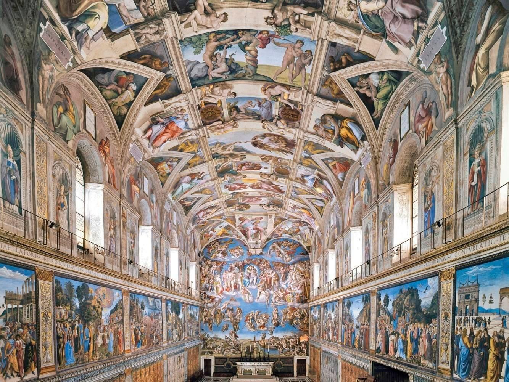

The Last Judgement
.
Location: Vatican City, Rome, Italy
Average Daily Visitors: 20 to 30 Thousand People
Average Yearly Vistors: 6 to 7 Million People
area2

Minnie is a personal internet server.
More descriptions to be added...